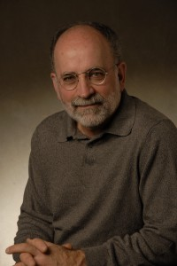

When the medical system can't explain your symptoms, the answer may be in your jaw.
For 40 years, Dr. Dwight Jennings has helped patients with chronic pain, migraines, sleep apnea, and unexplained medical conditions find relief through a non-surgical approach mainstream medicine has overlooked.

What if the cause of your symptoms isn't where doctors have been looking?
Multiple research studies have shown that TMJ — temporomandibular joint dysfunction — is associated with a startlingly long list of comorbidities: chronic headaches, fibromyalgia, fatigue, sleep disorders, even movement disorders like Tourette's and Parkinson's. Patients with bite issues have markedly higher medical utilization rates than the general population.
The mechanism is now well-documented. Jaw misalignment elevates trigeminal nerve activity, which in turn increases substance P — a neuropeptide that, when chronically elevated, sensitizes cell membranes throughout the body and disrupts normal function across multiple systems. The trigeminal nerve has on average 100 times more dense pain fibers than any other nerve in the body. When it's chronically activated, the consequences ripple outward.
Dr. Jennings has spent four decades developing the diagnostic and treatment protocols this work requires. The treatment itself is undramatic — a removable dental appliance, almost never surgery, that aligns the jaw and relieves the pressure on the joint. The results, for the right patients, can be transformative.
Six entry points into the same body of work
If any of these describe you — or someone you've been trying to help — start here.
TMJ pain & dysfunction
Jaw pain, clicking, locking, ear pressure, facial pain. The original specialty of the practice — and where most patients begin.
Learn moreChronic headaches & migraines
Bite alignment therapy is shown in multiple studies to be 85% effective at reversing chronic headaches — regardless of headache type.
Learn moreSleep apnea
Advanced obstructive sleep apnea treatment based on dental orthopedics — for patients who can't tolerate or aren't well-served by CPAP.
Learn moreMovement disorders
Tourette's, Parkinson's, dystonia, torticollis, and gait disorders have been reversed in cases through craniomandibular alignment therapy.
Learn moreSurgical alternative
Many cases recommended for orthognathic surgery or TMJ surgery can be treated nonsurgically with precision jaw orthopedics.
Learn moreComplex & undiagnosed
Fibromyalgia, IBS, autoimmune conditions, depression, ADD, autism, and the long list of conditions linked to substance P dysregulation.
Learn moreA practice unlike any other

Dr. Dwight Jennings, DDS, MICCMO
A general dentist for ten years before specializing in jaw orthopedics, Dr. Jennings has spent the last four decades developing diagnostic protocols and treatment innovations that are now reshaping how the field understands the connection between jaw function and systemic health.
His original research on the substance-P cascade, the trigeminal system, and the mechanism by which jaw dysfunction drives systemic illness has been published in journals including Cranio and TMDiary. He is a Master of the International College of Cranio-Mandibular Orthopedics (MICCMO).
Read his full storyThe kind of patient who finds us
Fainting on uphill walks. Multiple physicians. Normal X-rays, MRI, EKG.
A man in his mid-sixties had a history of fainting when he walked uphill. He had been examined by multiple physicians and undergone X-rays, MRI, and EKG with no abnormal findings. In a phone interview, he mentioned that before he passed out he would develop pain in his ankles, knees, and hips — a sign that there was possibly a trigeminal nerve component to his fainting.
What patients say after the work is done.
A small sample. The full set of patient stories is on the Conditions pages and grows continuously.
Down to four hours of sleep a night. Sleep apnea from teenage braces that retruded the lower jaw. Severe chemical sensitivity — couldn't tolerate rubbing alcohol. Every lab test normal. The first night with the splint, eight hours like a baby. Two years to fully recover.
Chronic fatigue syndrome with severe hypersensitivity. Couldn't tolerate perfume. Felt wind inside her head on windy days — to the point of needing to lie down with pillows around her head. Years later, those days no longer affect her. Her son was treated separately for sleep apnea, recurrent ear and sinus infections, and a toed-in foot.
Eighty-three years old. Wet macular degeneration. Photodynamic therapy nine times, around-the-eye laser treatment 150+ times per side, radiation in one eye. The bleeding wouldn't stop. Six months of jaw orthopedic treatment with Dr. Jennings, and the bleeding and leakage stopped. Vision didn't return — but the deterioration stopped.
Drawn from publicly recorded patient remarks. To be confirmed and re-consented before publication on the live site.
A scientific basis, not a hunch.
If you're a physician, dentist, or neurologist with a patient whose presentation doesn't add up, the trigeminal–substance P axis may be worth investigating. The framework is built on textbook neuroscience and a growing peer-reviewed evidence base. Citations and the referral pathway are on the Research page.
Research & referrals